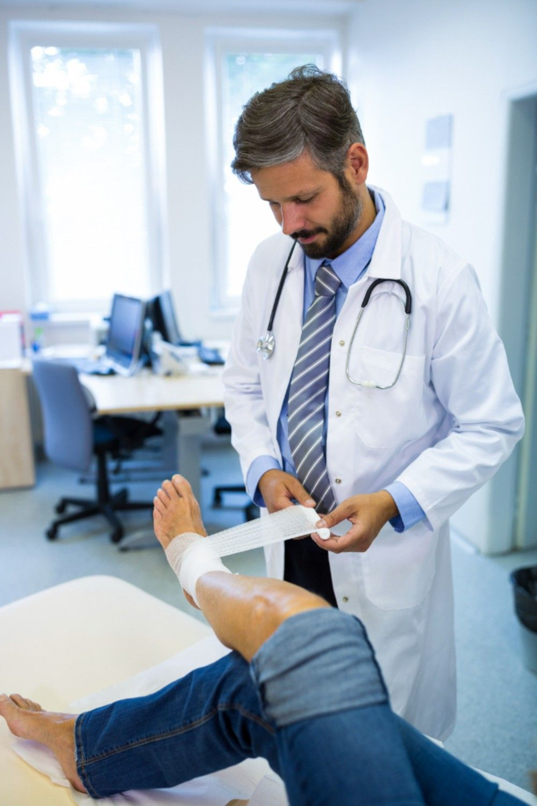

01
Gait Assessment
Your physiotherapist observes your walking pattern and identifies areas that may require rehabilitation.
Personalised physiotherapy programmes designed to support walking ability, balance, coordination and confident functional movement.

Gait and Balance Training focuses on improving walking patterns, stability, coordination and functional movement according to your individual rehabilitation needs.
Your physiotherapist will assess your movement, balance and functional abilities and develop a suitable rehabilitation programme.
Your walking ability, balance and movement requirements are assessed before treatment.
Exercises and movement activities are selected according to your functional goals.
Training can progress as your strength, stability and confidence improve.
Gait and Balance Training involves assessment and rehabilitation activities that may help support walking, stability, coordination and functional mobility.
Your physiotherapist observes your walking pattern and identifies areas that may require rehabilitation.
Balance and stability are assessed according to your functional abilities and individual rehabilitation requirements.
Appropriate exercises and movement activities may be incorporated to support everyday functional mobility.
Your physiotherapist may select different training activities depending on your assessment and rehabilitation goals.
Exercises and supervised activities may support a more confident and functional walking pattern.
Appropriate exercises may focus on maintaining stability while standing in different positions.
Controlled movement activities may challenge balance during functional tasks.
Exercises may be used to support coordination and controlled movement.
Strengthening exercises may support the muscles involved in standing and walking.
Training may include everyday movement tasks such as turning, stepping and changing direction.
Gait and Balance Training is individualised. Your physiotherapist determines suitable activities based on your assessment and goals.
Training may help develop greater confidence during walking and functional movement.
Appropriate exercises can be incorporated to work on balance and stability.
Rehabilitation may include strengthening and control exercises for functional tasks.
Training can focus on practical movement skills relevant to everyday activities.
Discuss your walking, balance or mobility concerns and rehabilitation goals.
Your physiotherapist assesses gait, balance, movement and functional abilities.
Suitable gait, balance and functional exercises are introduced under supervision.
Exercises and activities may be progressed according to your response and rehabilitation goals.
Here are some general questions about Gait and Balance Training. Your physiotherapist can provide guidance based on your individual assessment.
Ask Our Team →Gait training may be included in rehabilitation programmes for people experiencing difficulties with walking, balance or functional mobility. Suitability depends on individual assessment.
Balance exercises can be used as part of rehabilitation to work on stability, coordination and controlled movement. Your programme should be tailored to you.
It may be included when appropriate following an injury. Your physiotherapist will assess your condition before selecting suitable exercises.
Session length varies according to your assessment, treatment programme and the activities included during your visit.
Yes, an assessment helps your physiotherapist understand your movement, balance and functional requirements and select an appropriate programme.
Speak with our physiotherapy team to understand whether Gait and Balance Training may be suitable for your individual rehabilitation needs.